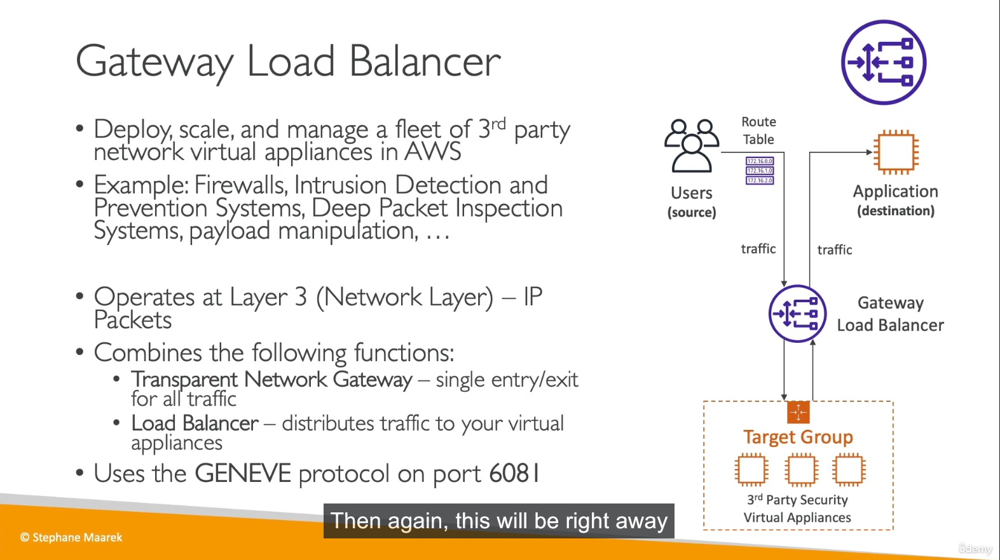

Udemy AWS SAA-C03 課程筆記
Contents
Intro
這篇筆記會記錄 Udemy Ultimate AWS Certified Solutions Architect Associate SAA-C03 隨堂筆記。
!! 目前施工中~~~ !!
AWS Free Tier 說明
▲ Control Your AWS Costs，設定警告避免帳單爆炸。
Section 4 IAM and AWS CLI
IAM
- Groups 只能包含 users， 不能包含另一個 group
- Policy 除了可以加在 groups 以外， inline policy 可以直接對 user 賦予權限
▲ IAM inline policy
- IAM Role 與 IAM Policy 的差別:
IAM Roles vs. Policies. IAM Roles manage who has access to your AWS resources, whereas IAM policies control their permissions. A Role with no Policy attached to it won’t have to access any AWS resources.
CLI
Installing or updating the latest version of the AWS CLI
AWS bash complete - Command completion
|
|
設定 AWS cli - Configuration and credential file settings
|
|
config file 會在 ~/.aws/credentials
|
|
Section 5 EC2 Fundamentals
- EC2 stop and start 會改變 Public IP 但是 Private IP 不會改變。
- EC2 security group 是有 region/VPC 區分的 (不可跨)。
- EC2 Spot Request 分成 (1) one-time (2) persistent， 但不論 spot request 是否存在 instance 都必須手動被關閉 (假設是 running 狀態，且沒有被競價而關閉)
秉持最小權限原則，我將 EC2 設定 Inbound TCP/80 TCP/22 只允許被家裡固定 IP 訪問，但會造成 Web shell 沒辦法連線，解法請參考下方。
EC2 允許 Web Shell (Instance Connect) 連線，security group 設定方式
- Set up EC2 Instance Connect#Task 1: Configure network access to an instance-(Amazon EC2 console)
- AWS IP address ranges

▲ 以 Singapore (ap-southeast-1) 來說就是這段。

▲ EC2 命名規則。

▲ EC2 Price type.

▲ spot request lifecycle. ref 假設 sport request 是 persistent，想要關閉由 sport request 建立的 instance 的話，必須要先關閉 spot request
Section 6 EC2 Solutions Architect Associate Level
- Elastic IP 如果申請後不使用會被收錢。
Placement Group 放置群組
這有點像 VMware 的 DRS (Distributed Resource Schedler)
- Cluster placement groups
- EC2 會被放在 the same AZ and the same rack ，讓 instance 擁有高速/低延遲網路
- Partition placement groups
- 假設有 partition 1~3，每個 partition 都可以有多個 instance
- 每個 partition 內的 instance 會被限制在同一個 AZ 中特定一組機櫃。(Amazon EC2 ensures that each partition within a placement group has its own set of racks )
- 不同 partition 內的 instance 不會共用機櫃。 The instances in a partition do not share racks with the instances in the other partitions
- 每個 partition 可以在不同 AZ，一個 AZ 至多有 7 個 partition (但要是在同一個 region)
- Spread placement groups
- 群組內至多只能有 7 個 instance
- 群組內的 instance 都會被放置在不同機櫃。 The seven instances are placed on seven different racks

▲ 圖片來源: Using partition placement groups for large distributed and replicated workloads in Amazon EC2
Elastic network interfaces (ENI)
An ENI is a logical networking component in a VPC that represents a virtual network card
Section 7 EC2 Instance Storage
EBS
- A network drive
- Locked to AZ. (Snapshot 後可搬遷)
- Each EBS attach ONLY 1 EC2 instance ( 1:1，但是 io1 / io2 除外! )
EBS volume types
- gp2 效能與硬碟大小有正相關性
- gp2 要開到 5334 GB才能獲得最高 IOPS 16,000。(3 IOPS per GB)
- gp3 最低效能有 3000 IOPS + 125MiB/s，可以自行調整
以上都是 SSD 可開範圍從 1 GiB ~ 16 TiB
▲ 上圖是 EC2 t2.micro with 30GB gp2 EBS 的笑能。測試使用 Yet-Another-Bench-Script
- Provisioned IOPS SSD volumes: io1 / io2 / io2 Block Express volumes
- 極致效能

▲ Provisioned IOPS SSD volumes
- Hard disk drive (HDD) volumes: st1 / sc1 (cold HDD)
EBS Snapshot
- EBS snapshot -> EBS archive，可以節省 75% 的花費，但可能會花費 72 小時 restore (講師是說 24-72 啦)
- Fast Snapshot Restore (FSR) 能夠快速復原到 EBS，但是要花錢。
EBS encryption
- 想對 未加密 EBS 加密的話，步驟如下: snapshot -> copy snapshot with encrypted -> create EBS from encrypted snapshot
EC2 instance store
- 有鑑於 EBS 是 network drive， EC2 instance store 是使用 server 身上的硬碟
- 有較好的 I/O performance
- 缺點: 要錢
這是使用者的缺點 - 缺點: EC2 instance stop 之後 instance store 就會消失! 所以又被稱為 ephemeral store
- 缺點: server hardware failed 在上面的資料也跟著 failed (不知道有沒有做 RAID)
AMI Amazon Machine Images
- 能夠客製化 OS image (預裝所需套件、監控)
- region level，可以被複製到其他區域
- AMI Marketplace 歡迎參觀選購
- 製作方式跟 VMware Template 很像， VM 開機 -> 裝飾 -> 關機 (EC2 利用 snapshot，無須關機) -> 製作範本
EFS, Amazon Elastic File System
- NFS drive，只支援 Linux base AMI
- Region base == cross AZ
- 價格是 3x gp2
- 效能可設定
- 能設定 policy 自動把不常存取的 file 丟進 EFS-IA (Amazon EFS Infrequent Access) 減少花費
- Support multi attache
Section 8 High Availability and Scalability:ELB & ASG
ELB - ALB
- AWS managed LB
- ALB 的 security group 要建立兩個:
- (1) HTTP-allow-all 允許 TCP 80 port in/out bound，綁在 ELB 身上
- (2) allow-my-ELB-visit 允許 TCP 80 port Inbound，綁在 EC2 身上， source 是 HTTP-allow-all 這個 SG
- target group 內的 targets 若有 health check failed 建議一律 Deregister -> regist (重新註冊)
▲ ELB 歷史種類。
ELB - NLB
Network Load Balancer overview
- OSI layer 4 level LB
ELB - GWLB

▲ Gatwway load blancer 屬於 Layer 3 層級的 LB，講師以流量清洗 (firewall) 作為例子。流量會透過 GWLB 打在 target group 清洗完之後才會打到 App
Cross Zone LB
- ALB 預設會跨 AZ，從 ELB, target group 可以關閉 (兩個地方)
- ALB 跨 AZ 流量不收費。NLB, GWLB 要收!
- NLB and GWLB 的 cross zone 預設是關閉的
▲ ELB cross zone V.S without cross zone
Section 9 RDS + Aurora + ElastiCache
RDS, Amazon Relational Database Service
- AWS 代管 DB 服務， 使用者沒有 EC2 SSH 訪問權限。
- 可跨 AZ， (可選) AWS 會自動幫你在不同 AZ 產一個 standby instance + maintain
- 硬碟空間可視為無限大，使用者可以設定最高容量避免 auto scaling 導致費用爆炸
- DB Engine 支援: MariaDB, MySQL, PostgreSQL, MSSQL, Oracle
- 在相同 region 的 read replicaset instances 同步 (Async) 流量不計費。

▲ RDS 多讀架構。延伸閱讀: MariaDB Replication
▲ DNS domain name 能夠達成 automatic failed over
Author 老柯
LastMod 2023-02-13